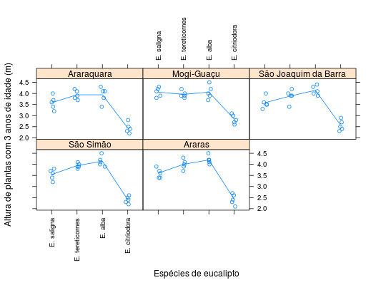

Dados referentes à altura de plantas de eucalipto, com 3 anos de idade, em ensaios inteiramente casualizados estudando o efeito da espécie de eucalipto em vários municípios (grupo de experimentos). Os ensaios foram conduzidos pelo Instituto Florestal, em Tupi/SP. Todos os ensaios receberam uma calagem e uma adubação completa.
Um data.frame com 100 observações e 4 variáveis, em
que
locespecreptaltBARBIN (2013), Exercício 18, pág. 210.
library(lattice) data(BarbinEx18)#> Warning: data set ‘BarbinEx18’ not foundstr(BarbinEx18)#> 'data.frame': 100 obs. of 4 variables: #> $ loc : Factor w/ 5 levels "Araraquara","Mogi-Guaçu",..: 1 1 1 1 1 1 1 1 1 1 ... #> $ espec: Factor w/ 4 levels "E. saligna","E. tereticornes",..: 1 2 3 4 1 2 3 4 1 2 ... #> $ rept : int 1 1 1 1 2 2 2 2 3 3 ... #> $ alt : num 3.6 3.8 4.1 2.5 3.2 3.9 3.8 2.8 3.4 3.7 ...xyplot(alt ~ espec | loc, data = BarbinEx18, type = c("p", "a"), jitter.x = TRUE, as.table = TRUE, xlab = "Espécies de eucalipto", ylab = "Altura de plantas com 3 anos de idade (m)", scales = list(x = list(rot = 90)))